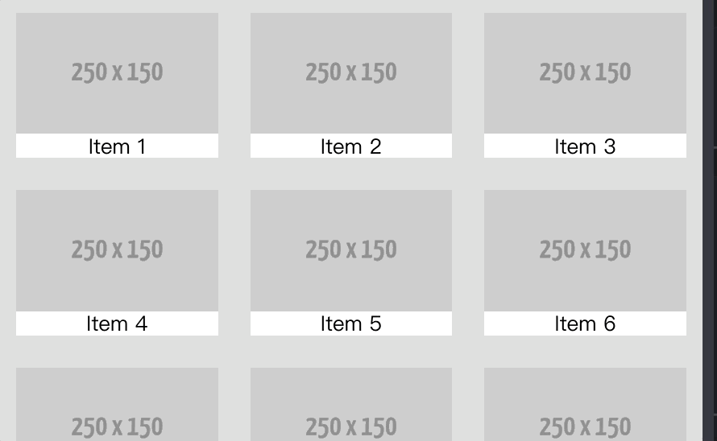

前言
這是參考2019 iT 邦幫忙鐵人賽的從0開始的網頁生活！30天從網頁新手到網頁入門這篇文章來學習和記錄
day02網頁三兄弟HTML、CSS、JavaScript
網頁架構
簡單介紹一下構成網頁三大元素HTML,CSS,JavaScript
HTML負責的就是把網頁的結構生出來，而CSS就是負責把外貌給顯示出來，讓網頁的外貌看起來美觀一些，最後JavaScript再負責去控制網頁裡面的內容以及使用者的操作行為。
HTML
HTML就是管理網頁的架構，一個好的網頁其HTML可以說是相當單純且具有易讀性，這種網頁不但方便前端工程師進行後續的維護外，也比較容易讓你的網頁增加曝光率讓技尋引擎能把你的網頁擺在最前面，此種行為稱為SEO，而且目前HTML已經發布到第五版同時也是目前廣為使用的版本。
HTML基本觀念
HTML內的element排序屬於巢狀結構，巢狀結構簡單來說就是一層一層的概念，舉例來說
1 | <div> |
可以看到<p>這個element被<div>這個element包起來, 代表<div>在<p>的上層，會用兩個專有名詞來稱呼上下層之間的關係，上層稱為父元素下層稱為子元素。
Attribute
Attibute簡單來說就是用來敘述element的相關性質，舉例來說
1
2
3
4
5<div class="txt" id="uniqueTxt">Hello World</div>
<!-- placeholder 為提示文字 -->
<input placeholder="請輸入文字" 誤=“input”/>
<!-- href為超連結網址 -->
<a href="www.google.com.tw" class="link">Google</a>可以看到到在element裡面寫了
class、placeholder、href、這些不是element的東西，這重附加在element上的東西就稱之為attribute，更多詳細的attributes可以參考這個網站，這邊就介紹每個element都可以用的global attributesGlobal Attributes
剛剛的例子，我們可以發現
class跟id這兩個attribute都出現在好幾個不同的element裡面，這些就是glogal attribute,至於global attribute的相關用途會在底下的CSS基礎觀念加以敘述，這邊有一個動要的觀念要交代，一個element可以有無數個class可是只能有一個id，這邊可以用一個簡單的方式來思考，一個人可以有很多的角色，但是只會有一個身分證字號，而class就是男生，學生，id就是身分證字號。
CSS
CSS就是管理網頁的外貌，CSS之於網頁如同化妝品之於人類，因此CSS相當考驗工程師的美感，而目前CSS已經發布到第三版同時也是目前最廣為使用的版本，因此大家常聽到的CSS3其實就是指第三版的CSS喔
CSS其本觀念
之前提到的global attributes,就是為了讓CSS可以快速的幫這些element加上專屬的樣式，一般可以分成三種方式來替element加樣式
style attribute(inline style)
這種是最直觀也是簡單的，也就是直接在element裡寫sytle，這有個小小的觀念，其實CSS是有階級之分的在下面的例子三個
Hello World分別會變成什麼顏色1
2
3
4
5
6
7
8
9
10
11
12
13
14
15
16
17
<html>
<head></head>
<style>
.txt {
color: green;
}
#TXT {
color: blue;
}
</style>
<body>
<p class="txt">Hello World</p>
<p class="txt" id="TXT">Hello World</p>
<p class="txt" id="TXT" style="color: red;">Hello World</p>
</body>
</html>答案是綠色，藍色，紅色，所以可想而知CSS讀取的優先順為 inline style > id > class 難道沒有其他方法可以強制覆蓋element內的sytle嗎，答案是有的, 只需要加上
!important就可以了, 全部會變成綠色1
2
3
4
5
6
7
8
9
10
11
12
13
14
15
16
17
<html>
<head></head>
<style>
.txt {
color: green !important;
}
#TXT {
color: blue;
}
</style>
<body>
<p class="txt">Hello World</p>
<p class="txt" id="TXT">Hello World</p>
<p class="txt" id="TXT" style="color: red;">Hello World</p>
</body>
</html>style tag(
<style>)這邊就是實作樣式的地方，這邊通常都會用
class以及id來描述，在寫法上class會用.className而id會用#idName來區分。link ref import css files
最後一種方法就是寫CSS檔來描述網頁內的各個樣式並利用link tag 來連結檔案
JavaScript
JavaScript就是管理網頁的內容以及使用者的操作行無，因此JavaScript可以說是網頁最要同時也是最難學的一個環節。
JavaScript基本觀念
上面提到JavaScript的存在就是為了要控制網頁的內容，所以可以猜想到JavaScript最重要的概念就是要控制HTML中的各個element，既然要控制element那勢必得提供相對應的Web API,在剛剛的連結中可能會被裡面一堆的API嚇到，這裏建議先看懂DOM API即可，這邊跟CSS一樣有三種方法，而且三種方法都是一樣的道理喔
Attribute
熟悉的attribute又來了，可以把JavaScript寫在HTML的element內了，沒錯的確是可以這樣使用不過比較少人用就是了，比較正常的做法是在element內寫上onClick之類的attribure綁上function然後再到等等要𧦦到的script裡面去實作functon。有一個疑問：click就click為啥還要多加一個on變成onClick呢？
click
click為事件(event), 事件非常單純只負責通風報信，舉例來說當有個element被點擊，那這個element就被觸發了click這個event，他不用去管後續的動作只需要告知說我被點擊了而已。
onClick
onClick為處理事件的處理器(handler)所以會是一個function型態，舉例來說當一個element觸發click事件後會呼叫onClick來進行click後的動作
所以我們可以推斷先有event才會有handler，這也是為什麼element上面會直接寫onClick而不是click的原因，那如枎不直接寫handler而要用event的方式撰寫要怎麼做呢？這時候就需要addEventListener()了
addEventListener()簡單來說就是個替element監聽事件的監聽器，而addEventListener()一共有三個參數:event,handler,boolean value。
event
這個就不用多做介牭了，就擺上要監聽的事件名稱更多詳細的事件名稱可以參考這個網站。
handler
這裡就是要寫上handler，負責去執行event的後續動作。
boolean value
這裡牽扯到兩個很重要的事件流程，分別為事件冒泡(bubbling)和事件捕獲(bapture)
buggling
從觸發事件的element開始，將事件往上傳遞直到document
catpure
從document開始逐漸往下找尋觸發事件的element
可以發現兩者的差別只有在於流程順序而已，在大部分的狀況下通常事件流程都不會有順序上的差別，只有在少部分的情況下就會有順序上的差別，可以參考這個範例。
script tag(
<script>)這邊就是實作 JavaScript 的地方啦，概念就跟 CSS 一樣。
script src import js files
跟 CSS 不同的地方是 script tag 本身就可以連結 js 檔案，只需要加個
src這個 attribute 就可以了，不像 CSS 還需要透過<link>來連結檔案。
day03深入理解網頁架構DOM
DOM全名為Document Object Model中文翻譯為文件物件模型，看起來很抽象但其實就是把一分HTM文件內的各個標籤，包括文字，圖片等等都定義成物件，而這些物件最終會形成一個樹狀結構
為何需要DOM
網頁是由瀏覽器負責運行，因此可以知道瀏覽其實就是一種編譯器負責去鍽譯我們寫的網頁程式，有非常多間公司都在設計瀏覽器，假如沒有先定好一個規則讓各個瀏覽器都必須要按照這個規則去編譯我們的網頁程式的話，工程師頭就痛了，也因此 W3C 出現了， W3C 定義了非常多的網頁規則好讓各大瀏覽器可以按照這些規則去設計瀏覽器，其中 DOM 就是其中的一個定義。
DOM解析
既然上面都提到 DOM 會形成一個樹狀結構，而樹狀結構最重要的就是各個 節點(node)。
在DOM中每個element，文字(text)等等都是一個節點，而節點通常分成以下四種：
Document
Document就是指這份文件，也就是這份HTML檔的開端，所有的一切都會從Document開始往下進行
Element
Element就是指文件內的各個標籤，因此像是
<div>、<p>等等各種HTML Tag都是被歸類在Element裡面Text
Text就是指被各個標籤包起包的文字，舉例來說在
<h1>Hello World</h1>中，Hello World被<h1>這個Element包起來，因此Hello World就是此Element的TextAttribute
Attribute就是指各個標籤內的相關屬性
範例
這邊以一個簡單的code來總結一下上述所說得事項，並把這份文件(document)內的元素(element)變成一個樹狀結構。
1 | <html> |
首先是最一開始的document，往下開始遇到<html>這個element, 這個<html>包含了<head>以及<body>這兩個element，其中<head>這固element包含了<title>這個element而<title>的text為example，再來是<body>這個element包含了<h1>這個element而<h1>的text為Hello Worldattribute為class。
看起來很像在繞口令，但瀏覽器就是這樣一步一步的把 HTML 解析(parse) 成一顆 DOM tree
DOM遍歷
由於DOM為樹狀結構，樹狀結構最動要的觀念就是Node彼此之間的關系，這邊可以分成以下兩種關系：
父子關系(Parent and Child)
簡單來說就是上下層節點，上層為Parent Node，下層為Child Node
兄弟關系(Siblings)
簡單來說就是同一層節點，彼此間只有Previous以及Next兩種
DOM操作
實際操作，常用的DOM API，首先先從抓取Nodes開始。
document.getElementById(‘idName’)
找尋DOM中符合此
id名稱的元素，並回傳相對應的elementdocument.getElementByTabName(‘tag’)
找尋DOM中符合此
tag名稱的所有元素，並回傳相對應的element集合，集合無HTMLCollection。document.getElementByClassName(‘className’)
找尋DOM中符合此
class名稱的所有元素，並回傳相對應的element集合，集合無HTMLCollection。document.querySelector(‘selector’)
利用selecor來找尋DOM中的元素，並回傳相對應的第一個element.
document.querySelectorAll(‘selector’)
利用selecor來找尋DOM中的所有元素，並品傳相對應的第一個element，集合為NodeList
這裡稍微提一下HTMLCollection以及NodeList兩個都是Collection of DOM Nodes，那到底差在哪呢？
HTMLCollection
集合內元素為HTML element，也因此Node type只能接受Element
NodeList
集合內元素為Node，也因此全部的Node都可以存收在NodeList內。
其實真正常用的 DOM API 也就這幾種而已
day04-CSS選擇器
學會CSS Selectors才能算是真正的學會了CSS，其實上面有兩個CSS Selectors,那就是.clss以及#id這兩個其實就是selectors裡面的成員，接下來介紹幾個常用的selectors
什麼是CSS選擇器(CSS Selectors)
看到名字就知道這是負責去選取事物，其實select這個名詞在CSS中扮演的是一種模式，這個模式就是負責去找指定的element，而selectors就是負責去實踐這個模式的重要工具。
為何需要CSS選擇器
CSS在網頁所扮演的角色就是負責打扮整個網頁的樣式 可以想像成在一個群體中只有一位化妝師要負責去打扮這個群體裡所有的人，其中這個群體的每位人物都會有屬於自已的裝扮，這時候化妝師就必須要用一些方法去挑選這裡頭的人來進行化妝，selectors就是這種存在，一個網頁裡會有非常多的element, 而CSS要㮹何讓這些element可以正確的擁有自已的style，就必須要依靠selectors去找尋這些element了。
常用的CSS選擇器
選擇器主要可以分成以下四大類單純選擇器(Simple Selectors)、組合選擇器(Combinators)、偽類別(Pseudo-Class)、偽元素(Pseudo-Element)
單純選擇器(Simple Selectors)
這邊介紹的選擇器都只有單純的選取某一個element或者是符合此條件的全部集合
*
這個符號就是一個星星
*這個東西在selectors裡面扮演的就是全部事物，所以會選取到HTML內的所有elementelement
element就是指這個被選取到的element全部都會有相對應的樣式，雖然也是全部的概念但是跟
*不一樣。.className
.className代表只要element的class attribute其className與.className一樣就會被選取到。#idName
#id代表只要element的id attribute其idName與#idName一樣就會被選取到。
接下來要來講點跟attribure有關的了，這邊的attribute並不包含global attribure
只要是寫跟attribure有關的都一定要用[]包起來，這邊會用兩張圖來描述attribure的相關寫法。
stackblitz 注意input[value]中間沒有空格
1 | <html> |
效果如下的畫面


比較上兩張圖後可以發現，如果單純只在[]裡面寫上attribute的話，代表全部都有這個attribute的都會被選取到，但假如在attribure後方加上數值的話就代表要完美符合這個條件的才會被選取到。
組合選擇器(Combinators)
element1,element2,…
這個代表的是element1以及element2都會有一樣的樣式。
element1 element2 …
這個代表的是只要有被element1包起來的element2,其element2會有相對應的樣式，簡單的來說空白這個selector不管你的element2在哪一層，只要他被element1包起來就會被選取到。
element1 > element2 > …
這個代表的是element1下一層的element2會有相對應的樣式，這個
>跟上面的空白不一樣，這個比較嚴謹一點了，這個僅限於element1的下一層，只要element2不是在element1下一層的都不會被選取到。*ement1 + element2 + … *
這個代表的是在同一層中緊接在element1的element2，其element2會有相對應的樣式，也就是這個條件要符合救一個重要元素就是兩個element彼此要為siblings，以程式碼方式讓大家來理解。stackblitz
1
2
3
4
5
6
7
8
9
10
11
12
13
14
15<html>
<head>
<style>
.item1 + .item2 {
color:red;
}
</style>
</head>
<body>
<div class="container">
<div class="item1">我的文字不是紅色 </div>
<div class="item2">我的文字是紅色 </div>
</div>
</body>
</html>
偽類別(Pseudo-Class)
element:nth-child(n)
這個代表的是所選取到的element，其第n個element會有相對應的樣式，這邊要注意一點：一般程式語言的起始index為0，可是CSS的起始index為1所以在指n的時候不要指定錯了stackblitz
1
2
3
4
5
6
7
8
9
10
11
12
13
14
15
16<html>
<head>
<style>
.item:nth-child(2) {
color:red;
}
</style>
</head>
<body>
<div class="container">
<div class="item">我的文字不是紅色 </div>
<div class="item">我的文字是紅色 </div>
<div class="item">我的文字不是紅色 </div>
</div>
</body>
</html>
element:hover
hover的動作就是指讓滑鼠游標移動到element上，並且不讓這個游標離開該element, 通常會用這樣式都是為了提醒使用者這個elemen是有功能的。stackblitz
1
2
3
4
5
6
7
8
9
10
11
12
13
14
15
16
17
18
19
20
21
22
23
24<html>
<head>
<style>
.btn:hover {
background-color: gray;
color: black;
}
.btn {
width: 80px;
height: 25px;
background-color: black;
color: white;
border: white 2px solid;
border-radius: 5px;
text-align: center;
cursor: pointer;
}
</style>
</head>
<body>
<div class="btn">我是按鈕 </div>
</body>
</html>
偽元素(Pseudo-Element)
最後來講兩個最奇特的 selectors ： ::after 以及 ::before 。
看到 偽元素 大概就猜想得到這個是一個假的元素是不存在的，沒錯這兩個 selectors其實跟一般 selectors 要做的事情比較不一樣，這兩個要做的事情是在網頁中插入一些不存在於 HTML 上的內容，而非單純的只有選取 element 而已，而這兩個偽元素也非常直觀，看名字就知道一個是在 element 後面加上偽內容另一個則是在前面，這邊舉一個最常使用的例子： clearfix 。
所謂的 clearfix 就是為了不讓子元素高度超過父元素而導致頁面看起來很醜陋，並利用 ::after 以及 ::before 來達到父元素自動撐開高度的效果，詳情可以參考這個範例。
Day05-讓CSS不再難讀SCSS
什麼是SCSS
在開始介紹 SCSS 之前先來介紹一下 SASS，在前一篇的 CSS 選擇器 中相信大家寫久之後會有一個感想，每次都要寫一大串的選擇器真的是非常麻煩，有時候寫太快還會不小心寫錯，於是 SASS 就被創造出來了，而 SASS 的寫法有分為舊版的 縮排語法 以及新的 SCSS ，由於 SCSS 為 CSS 的超集合，此一特性不但讓 SCSS 能兼容全部的 CSS 語法也讓大多數的人都選擇寫 SCSS
範例
在開始介紹下方的範例之前，提供一個非常適合練習 SCSS 的網站，大家不妨可以到這個網站練習看看 SCSS 的語法。
變數與運算
變數的最大的好處在於只履改變數的值就可以直接改變全部有用此變數的內容，最常被來當變數的就是顏色了，有了變數宣告𣄵不用一直複製顏色代碼了，而且也不擔心未來修改顏色時可能會忘記修改到某些元素的顏色。
變數的宣告相當簡單，只要加個
$而:後方接上變數的值即可，寫法跟CSS很像1
2
3$image-color: rgb(3,102,214);
$border-color: rgb(223,226,229);
$folder-color: rgba(3,46,97,0.5);宣告完之後只要在有需要引用此變數的地方寫上此變數的名稱即可
1
color: $image-color;
既然都可以宣告變數了，當然也可以進行變數的四則運算
1
2
3
4$index: 5px;
.container {
margin: $insex * 10;
}
巢狀結構(Nesting)
寫SCSS最厲害的地方就在於他的巢狀結構了。有了巢狀結構就不用花一堆心力寫一堆選擇器了，大家不妨可以猜猜看以下程式碼轉換成 CSS 後會長成什麼樣式，這邊附上轉換後的解答。
1
2
3
4
5
6
7
8
9
10
11
12
13
14
15
16
17.container {
display: block;
.box {
width: 50px;
height: 50px;
}
+ .container2 {
display: inline-block;
}
&:hover {
color: red;
cursor: pointer;
}
}可以發現巢狀結構的解析就是一層一層往下累加選擇器的class, 如果沒有指定選擇器則預設為空白, 而
&:這個符號就是給偽類別以及偽元素使用，這種寫法讓選擇器不再那麼麻煩而具也變得直觀許多。匯入其他SCSS檔案(@import)
SCSS的檔案是可以互相被引用的，只要寫上
@import 'file.scss'即可，引用的好處在於假如我有一個base.scss裡面就是定義一些基本的style,之後在寫其他的SCSS時就不用重新在寫一次基本的樣式。混合(@mixin)
混合就如其名，就是要讓一個自訂的樣式可以融入指定的元素，概念有點像是變數但不一樣的是混合是要寫完整的樣式而非只有單純的值而已，也因此
@mixin的樣式在轉換成CSS後是不會存在的，如果要甲用混合所宣告的組合則需使用@include, 通常用於大量且基本的樣式以減少開發時的CSS程式碼，@mixin寫法如下1
2
3
4
5
6
7
8
9@mixin block {
display: block;
width: 100px;
height: 100px;
}
.container {
@include block;
}轉換的結果可以參考這裡。
延展(@extend)
延展的概念跟口可以說是一模以，不一樣的地方在於
@extend只能用在已存在的class，這邊用選擇器的觀念去思考的話可以把@extend想成逗號這個選擇器，所以轉換後樣式不但都會被保留而且都會其用一樣的樣式，這點就跟＠minin有著非常的的差別山，@extend的寫法如下。1
2
3
4
5
6
7
8
9
10.container {
display: block;
width: 100px;
height: 100px;
}
.container2 {
@extend .container;
background-color: blue;
}轉換後的結果可以參考這裡。
函式(@function)
SCSS也可以寫函式來進行簡單的運算，而且也具備一些基本的程式語法像是：
@if、@return、@for等等，而SCSS也內建了許多函式可以使用，詳細的函式庫可以參考這個網站，@function的寫法如下1
2
3
4
5
6
7@function calc-margin($value) {
@return $value * 2;
}
.container {
margin: calc-margin(5);
}轉換後的結果可以參考這裡。
Day06-HTML開發利器！Emmet
Emmet的使用方式基本上跟寫CSS是差不多的，利用selectors的方式表達HTML架構，寫完後在按下鍵盤中的tab就會自動轉成HTML程式碼，目前主流的編輯器也都內建好Emmet這個強大的套件就連codepen也都有內建，可以直接在codepen上練習
範例
element
element.className
element.className1.className2
element#idName
element.className(#idName)>element.className(#idName)>….
element.className(#idName)+element.className(#idName)+…
elemetn.className(#idName)*value
! 或 html:5
今天分享的 Emmet 可以說是前端工程師在寫 HTML 檔的必備神器，摸熟 Emmet 保證可以讓你在撰寫 HTML 的過程中更加容易、更加迅速，而大家在看 Emmet 的文章時也發現裡面牽扯到很多 CSS selectors 的觀念，所以大家不妨可以先把選擇器摸熟後再來看 Emmet 的介紹，這樣會更容易看懂文章喔！
Day07-網頁排版利器！Flexbox
網頁最重要的就是排版，一般來說網頁是由一個一個的煰塊(block)組合而成，要排得好看其本上都要給定寬高，但這種排法會讓每個區塊過於死板，即便不把寬高寫死而是用百分比符號代替，這種寫法雖不會過於死板但有可能會讓區壞大小不夠精準，於是有彈性的區塊：Flexbox出來了。
基本概念
在正式介紹之前先了解一下Flexbox的基本概念與一般的區塊不同，Flexbox多了水平起點(main start)與水平終點(main end)、垂直起點(cross start)與垂直終點(cross end)、水平線與垂直線，這種非常細節性的屬性都是為了要讓區塊變得更加有彈性，這也讓Flexbox逐漸取代一般的區塊。

Flexbox講求的是同一個父元素中，其子元素的自由排版，也因此以下種種屬性設定都是寫在父元素而非寫在子元素中
屬性介紹
Flexbox的屬性可以分為以下幾點：
display
display可以說是CSS中最其本的屬性了，而Flexbox基本上也跟一般的區塊一樣可以分成
display:flex;以及display: inline-flex;兩種，而這兩種的差別也跟一般的區塊一樣只在於元素後方需不需換行而已。flex-direction
這個屬性主要是設定Flexbox內的元素排列方向，其值可分為以下四種
row
元素由在到右排序，為flex direction的預設值。

row-reverse
元素由右到左排序

column
元素由上到下排序

column-reverse
元素由下到上排序

justify-content
這個屬性主要是設定Flexbox內的元素水平對齊位置，其值可分為以下五種
flex-start
元素對齊水平方向最在邊的main start, 為預設值。

flex-end
元素對齊水平方向最右邊的mainend

center
元素水平置中

space-between
元素平均分配，但左右兩邊的元素會典齊main start 以及mainend.

space-around
元素平均分配，每個元素間距都會一致。

align-items
這個屬性主要是設定Flexbox內的元素垂直對齊位置其值可分為以下了種
flex-start
元素對齊垂直方向最上面的cross start

flex-end
元素對齊垂直方向最下面的cross end

center
元素垂直置中

stretch
元素撐滿整個高度，為預設值

baseline
以元素內的所有內容為基線對齊

align-self
這個屬性跟上面的align-items可以說是一模一樣，差別在於align-sele是針對單一元素而不是整個元素，也因此這個屬性比較特別是寫子元素中而不是父元素。

align-content
這個屬性也跟上面的align-items很像，差別在顧align-items是針對單行元素，而align-content是針對多行元素
flex-start
元素對齊垂直方向最上面的cross start

flex-end
元素對齊垂直方向最下面的cross end

center
元素垂置中

space-between
第一行元素對齊上方corss start，最後一行元素對齊下方cross end.

space-around
每行元素平均分布，間距一致

stretch
元素撐滿整個高度，為預設值。

order
這個屬性主要設定Flexbox內的元素順序，也因此這個屬性也是寫在子元素中，元素將由數值從小到大排序。

flex-wrap
這個屬性主要是設定Flexbox內的元素是否換行，在inline-flex的設定中，子元素會以單行方式撐滿整個父元素且不會換行，也因此需要此屬性進行換行，此屬性的值可分為以下的種：
nowrap
不換行，為預設值

wrap
換行

wrap-reverse
換行但元素反轉

flex
flex這個屬性是由三種不同的屬性結合而成:flex grow、flex shrink、flex basis，主要作用就是讓Flexbox內的元素進行彈性的比例伸縮，以下三種屬性皆是寫在子元素中，且值都為數值不可為負值，最小值為0。
flex-basis
子元素是否進行伸縮的依據，預設值為0。
flex-grow
當子元素flex-basis的值小於flex-grow所指定的值，則元素會進行伸展，預設數值為0

flex-shrink
當子元素flex-basis的值大於flex-grow所指定的值，則元素會進行壓縮，預設數值為1。

block與flexbox比較
flexbox最厲害的地方就在於可以用簡單的CSS寫法來達到工程師想要的版面，一個最顯著的例子來看 block 與 flexbox 是如何讓元素置中，可以發現 flexbox 真的簡單很多。
總結練習
Flexbox 可以說是非常好用的排版利器，只要學會了 flexbox ，任何版面都可以順利刻出來，就像這個例子，而且目前主流的瀏覽器都有支援這個 CSS
Day08-更強大的網頁排版利器!Grid
藉由flexbox讓網頁排版不再因難，然而前端世界變化萬千，比flexbox更厲害的排版樣式:grid出來了
什麼是grid
grid就是一個○的網格，如果說flexbox是針對一維(單行)的排版那麼grid就是針對二維(多行)的排版，在grid的世界裡，我們要做的就是把整個container的行數以及列數定義好，之微的排版只要用第幾行第幾列的方式去填元素就可以讓元素擺在想要的位置非常方便，在這邊提到一個有趣的網站，這個網站利用可愛的介面以及簡單的程式碼讓大家可以循序漸進的了解grid的強大排版能力。

屬性介紹
grid的屬性可以分成外部容器以及內部容器兩類:
外部容器
display
grid一樣也分為
display: grid;以及display: inline-grid;,差別在於兩個grid container之間需不需要換行。grid-template-columns
定義gird有多少行以及每行寬度，舉例來說：假如此grid具有五行，每行寬度均為原寬度的10％，則寫法如下。
1
2
3
4
5.container {
grid-template-columns: 10% 10% 10% 10% 10%;
/*也可以簡寫為*/
grid-template-colums: repeat(5,10%);
}
grid-template-rows
定義grid有多少列以及每列高度，舉例來說：假如此grid具有五例，每列高度均為100px，則寫法如下。
1
2
3
4
5.container {
grid-template-rows: 100px 100px 100px 100px 100px;
/* 也可以簡寫為 */
grid-template-rows: repeat(5,100px);
}grid有一個長度新的單位：
fr, 這個fr代表的是可用空間的分塊(fraction)，也就將剩餘空間等比例切割後產生的網格，舉例來說：假如我有一個55的contaiber，我在grid-template-colums:定義成10％ 10％ 2fr 1fr 1fr，我那5個column中會有2個寬度是目前container寬度10％然後再將剩餘的空間切割成1個寬度為(100%-210%)(2/4)大小的column以及2個寬度為(100%-210%)*(1/4)大小的column。
grid-auto-columns/gtid-auto-rows
定義gird內每個網格的寬高且每個網格寬高均會一致，寫法如下
1
2
3.contaiber {
grid-auto-colums: 100px;
}這邊要講兩個重要的grid格線:
明式格線(Explicit grid)
需清楚定義整個container具有多少行以及多少列，可客制化每個網格的寬高
grid-template-colums/gtid-template-rows屬於此類。暗式格線(Implicit grid)
無需清楚定義整個container具有多少行以及多少列，無法制化每個網格的寬高
grid-auto-columns/grid-auto-rows屬於此類。
grid-template-areas
定義grid每一個網格的名稱，舉例來說：下圖是一個簡單的3*3grid裡面分成了四大區塊。

這時候只要像下方這樣寫就可以達到上圖的樣式了
1
2
3
4
5
6.container {
grid-template-areas:
"header header header"
"content content sidebar"
"footer footer footer"
}小提醒：每一列的網格名稱可以動複出現但不可分離，因此
sidebar content content sidebar是錯誤的，所以如果兩側都要有sidebar的話可以定義成這樣sidebar1 conten content siebar2。grid-auto-flow
定義grid的排列方式
row
預設值，grid內的元素會以横向(左到右)排列。
column
gtid內的元素會以緃向(上到下)排列。
dense(row dense/column dense)
grid內的小元素優先排列，可服會造成排序上的優先問題，不建議使用。
grid-gap/grid-column-gap/grid-row-gap
定義grid水平及垂直隔線的間格，其中grid-gap為grid-column0gap以及grip-row-gap的結合，寫法如下
1
2
3
4
5
6.container {
grid-row-gap: 15px;//每列會有15px的間格
grid-column-gap: 10px;//每行會有10px的間格
/* 將上面兩行結合 */
grid-gap: 19px 10px;//先寫列再寫行
}
內部容器
grid-column-start/grid-row-start
定義grid內元素的寬/高起始網格。
grid-column-end/grid-row-end
定義grid內元素的寬/高終止網格。
提醒：假如我有一個元素佔了第一個網格到第三個網格，這時候start為1而end為4而不是3喔！
如果怕自己會忘記在end的地方加一，也可以用
span number來寫，number為所佔網格數目，因此end的值就可以改寫成span 3而不用寫4，這樣就不用擔心自己寫錯了。grid-column/grid-row
將上面兩個合併，中間用
/分開，/左邊為start右邊為end。grid-area
定義grid內元素位置，對應到
grid-template-areas的區塊名稱，寫法如下。1
2
3
4
5
6.container {
grid-template-areas: "header header";
}
.header {
grid-area:header
}小結
grid 跳脫了以往一列一列的排版模式，要想成每一個不同的元素被安排在特定的網格中，也讓 HTML 的結構變得更單純不會過於複雜，今天的總結練習延續昨天的 flexbox練習，只不過改成 grid 的版本
### Day09-CSS定位系統！position
一開始學習的網頁都是比較單純，都是一行一行的排版，前面的介紹也都是以排版的樣鄉開始介紹，然而時間久了自然會想讓網頁變得更加複雜，例如會想做點堆疊或者是幫圖片加上浮水印之類的效果，為了讓網頁可以排出更複雜的版面，來介紹**position**以及**z-index**這兩個CSS樣式。
#### position介紹
position翻成中文就是位置的意思，既然跟位置有關可以推想一下一定會有一個參考點跟自己的定位點，不然這個位置是無法確定的，所以可以猜想出來一定會有兩個元素分別去寫自己的position來定位。
- 預設定位(static)
預設值，沒有依何的定位效果，元素都會逐行排列。

- 相對定位(relative)
基本上跟static非常像，差別在於寫`position: relative;`時，假如加了`top`、`bottom`、`left`、`right`等𨬓幫助定位的屬性，在`position: relative;`時會相對性的調整該元素的位置。

- 絕對定位(absolute)
絕對定位跟底下的固定定位非常像，差別在於假如父元素有寫上position的相關屬性，則子元素會依照父元素的位置去進行後續的定位動作，若父元素沒有寫上任何的position，則會逐漸往上尋找其他袓先元素看看袓先元素是否有寫position屬性，如果都沒有則會依照HTML body來進行絕對定位，所以會寫`position: absolute;`的通常都是在子元素的地方撰寫，而父元素會寫上`position: relative;`幫助子元素進行絕對定位

- 固定定位(fixed)
固定定位相對於絕對定位就單純很多，只會針對頁面去進行定位，其父元素永遠都是HTML body，不用刻意的去思考上層元素的相對定位。
z-index
有提到了堆疊這個效果，z-index就是負責處理元素堆疊的樣式，一般來說網頁元素都是屬於二維空間的排列，也就是單純利用x軸以及y軸來考慮元素的位置，既然要做到堆疊元素勢必得考慮上下之間的關系，這時候就牽扯到z軸了，而z-index就是負責處理z軸的重要樣式。
這邊帶點空間概念來思者，以我們眼睛面對螢幕來看，x軸為左右、y軸為上下、而z軸就是面對我們眼睛的方向了，用這種方式來思者z-index應該會相對好懂一些。
而z-index後方所接的值以數字為主，數字越大代表在越上層反之則是在越下層，這時候你可能會問：我前面也可以利用絕對定位的方式來達到堆疊的效果，為什麼還要特地學一個z-index呢?
其實道理很簡單，前面的絕對定位的確可以達到堆疊的效果，但僅限於父元素與子元素之間，假如我今天有多個子元素要進行堆疊，而且這些子元素同時面對一個父元素，這種時候用絕對定位就比較不好做，就必須要利用z-index了。

提醒：要使用z-index記得要搭配position，這也是為什麼先提position再提z-indez
小結
今天的總結練習主要就是探討 position 以及 z-index 之間的關係， position 在複雜的網頁中扮演非常重要的角色，同時這也算是 CSS 中非常容易搞混的樣式，把 position 以及 z-index 搞懂任何再複雜的網頁都可以順利的排版出來了。
day10-html tag元素預設排版樣式
來講一些HTML tag本身預設的排版樣式，讓工程師不用為了一些簡單的排版還要去寫一些客製化的樣式，直托用HTML tag就可以達到一樣的效果了。
display樣式
首先先了了解一下最基礎的display樣式，畢竟HTML tag的預設樣式還沒有進化到直接用flexbox或grid之類的排版𫋵器
block
預設值，最單純的區塊，可以設定寬跟高來調整一區塊的大小，區塊與區塊彼此間都會換行排列。
inline
不能設定區塊的大小，但區塊與區塊彼此間不會換行排列。
inline-block
結合block與inline的特點，可以設定寬跟高來調整單一區塊的大小，同時區塊與區塊彼此間不會換行排列。

html tag
這邊HTML tag預設的排版樣式可分為display: block;以及display: inline;兩種，只純討論元素的diplay樣式，其他一些附加上去的樣式像是h1還有font-weight: bold;等等，這邊都不袁慮進去喔！
block
- div
- p
- h1/h2/h3/h4/h5/h6
- ul/ol
- li
- video
- form
- table
inline
span
a
img
label
b/string
input
小結
介紹了HTML tag預設的display樣式，雖然一些複雜的排版可能無法單純用HTML tab來達到理想的效果，必須要用到之前提到的flexbox或gird進行排版，不過如果是單純要用一些可能文字上的排版就不用多寫CSS來描述，直接用HTML tag就可以達偌理想的效果可以說是相當省力，所以HTML tab預設的dispplay樣式還是可以稍微了解一下。
Day11-HTML元素邊界關系！margin、padding、border
大家在看任何跟邊界有關的CSS時不曉得有沒有看過這張圖，這張圖代表著HTML內的每個元素的邊設定。

相信很多人在初學網頁的時候都會margin、padding傻傻分不清，兩者的作用都是負責調整邊界的間距，到底兩個差別在哪裡呢?以及border與box-sizing之間又有什麼關系呢?
margin
margin是負責調整元素與元素之間的邊界間距，屬於元素外部邊界調整。
屬性介紹
margin-top
設定元素與元素之間的上邊界間距
margin-right
設定元素與元素之間的右邊界間距
margin-bottom
設定元素與元素之間的下邊界間距
margin-left
設定元素與元素之間的左邊界間距

也可以將上述屬性合併寫成margin即可，但要注意方向性，margin寫法可以參考下圖

padding
padding是負責調整元素內所有內容與元素自身的邊界間距，屬於元素內部的邊界調整。
屬性介紹
padding-top
設定元素內容與元素自身上邊界的間距
padding-right
設定元素內容與元素自身右邊界的間距
padding-bottom
設定元素內容與元素自身下邊界的間距
padding-left
設定元素內容與元素自身左邊界的間距

也可以將上述的屬性合併寫成padding即可,但要注意方向性，padding寫法可以參考下圖

border
border是元素最外層的邊界，常見的元素外框設定就是此設定。
邊界樣式介紹
border-width
設定邊框寬度大小。
border-style
設定邊框樣式，常見的有實線(solid)、虛線(dashed)。
border-color
設定邊框顏色

屬性介紹
底下屬性後方所接的值為上面提到的樣式，順序為border-width、border-color、border-style，中間用空格隔開。
border-top
設定元素自身的上邊框。
border-right
設定元素自身的右邊框。
border-bottom
設定元素自身的下邊框。
border-left
設定元素自身的左邊框。
也可以將上述四屬性合併寫成border即可，代表四個方向的邊框都會套用一樣的樣式，寫法如下

box-sizing
box-sizing的出現是用來調整區塊的內距與邊框計算方式，與border以及padding的設定有關，常見的狀況就是元素內的內容設定了border以及padding導致外框超出原本元素的外框，影響了網頁的美觀程度。
參數介紹
content-box
設定的寬度僅為內容寬度、padding與border寬度會再額外加上去，所以內容仍然超出元素自身的外框。
border-box
設定的寬度就已經包含內容寬度、padding與border寬度，所以內容不會超出元素自身外框。


小結
今天提到了非常重要的邊界關係，假如今天要調整的是 元素與元素 之間不要靠得太近，就可以用 margin ，如果是要調整 元素內的內容與元素自身 不要靠得太近，就可以用 padding ，最後就用一個簡單的範例讓大家更了解 margin 以及 padding 的相關操作應用吧！
Day12-響應式網頁設計！RWD
什麼是響應式網頁設計(Responsive Web Design)
響應式網頁設計(Responsive Web Design)是一種讓網頁可以在不同的裝置上皆有適合的呈現模式，讓使用者在依何裝置上都可以用正常的操作方式來瀏覽網頁，RWD的宗旨在於內容像水一樣可以完美地適應任何一個新的環境，也奠了未來的網頁開發模式。

早期智慧型手機剛出來的時候，因為手機螢幕比一般的顯示器來的小很多，那時候的網頁都要透過使用者自行縮放進行瀏覽十分的不方便，當時的解決之道就重新寫一個網頁並且新增一個網址為m.xxx.com.tw的網頁來讓手機瀏覽。但這樣會增加前端工程師的作業量，要製作兩種不同的網頁非常的累，這時候有一位著的設計師就說了：何不讓網頁自己去做調整呢？藉都CSS Media Queries讓我們可以輕鬆的達到響應式網頁設計，接下來就讓我們來熟悉RWD的設計模式吧！
CSS Media Queries
既然是一種Query想當然一定會配合條件限制來達到其望的結果，在開始介紹Media的相關內容之前先簡單的介紹一下條件語法。
not
用來排除某些設備的樣式，假如有AB兩個設備，其中有一個樣式是想要A有卻不想要B有，這時候就可以用
@media A not B的方式來讓A設備有指定樣式。only
用於一些老舊不支援Media Queries的瀏覽器，不過現今的瀏覽器都支援Media Queries了，所以這個語法了解就好了。
and
and是最常使用的語法，翻成中水可以想成而且，用邏輯的方式去想𣄵代表左右兩邊均成立才成立，而and最常被擺在等等要介紹的Medai Feature進行串接。條件語法𣄵只有這三項而已非常簡單接下來就開始介紹重頭戲:Media Rule吧
Media Type
Media Type有非常多種，在這邊僅列出最常用的三種：
all
用於全部的裝置。
print
用於印表機，此樣式套用於預覽列印中。
screen
用於所有的螢幕，舉凡電腦、手机、平板裝置等螢幕皆適用於此。
Media Feature
Media Feature也有非常多種，這邊僅介紹用於RWD上的幾種Featues
width
寬度可分為最大寬度(max-width)以及最小寬度(min-width)兩種，用於裝置寬度範圍內的特定樣式。
height
高度可分為最大高度(max-height)以及最小寬度(min-height)兩種，用於裝置高度範圍內的特定樣式
orientation
當裝置處於直立(portrait)以及横向(landscope)時錢有特定樣式。
接下來讓我們把Media Rule以及條件語法結合成Media Query吧
1 | /* 當裝置寬度介於300~600px之間，className為container會有display:node;的樣式*/ |
小結
其實RWD實作非常簡單，只要把Media Queries搞懂就可以了，難處在於要如何設計在不同的寬度中要如何顯示才能方便使用者操作，提供一個範例來簡單描述一下 RWD 在各個裝置上的基本設定，先把Codepen外觀調成程式碼在左右兩側藉左右移曾頁面與程式碼之間的捲軸來觀看頁面item的變化。

Day13-JavaScript基本觀念介紹
雖然JavaScript被譽為最容易上手的程式語言之一，但JavaScript還是有許多小細節以及小觀念需要注意與釐清。
強型別VS弱型別
程式語言分為強型以及弱型別，差別於有沒有做型別檢查，什麼是型別檢查？就是當我要進行變數運算的時候，編譯器是否會先檢查變數型別，如果變數型別都一致才可以進行變數的運算，舉個例子：
1 | var x = 1; // x 無 integer |
以強型別的語言來說會直接噴錯誤，因為x與y的型別不一樣，整數與字串是不能進行運算的，可是弱型別的語言就不一樣了，以JavaScript來說這段程式碼不但可以被執行，而且z的值會是“11”, 雖然這樣有個好處就是使程式碼不會無綠無故地被終止，但這樣也可能會間接的讓程式發生不可預期的後果，因為不同型別的變數竟然可以拿來運算，所以這也是在撰寫JavaScript程式碼需要注意的一些重點。
靜態型別VS動態型別
靜態型別與動態型別，兩者差異非常簡單就於有沒有宣告變數的資料型別而已，舉例來說像C/C++在變數宣告上需要寫上資料型別：
1 | int a = 123; |
而JavaScript完全不用寫上資料型別交給編輯器去判斷，寫法法就簡潔很多：
1 | var a = 123; |
所以可以推想得知不用特別去寫變數資料型別的就是動態型別反之要寫上變數型別的就是靜態型別。

變數比較判斷
上面提到了強型別與弱型別，靜態型別與動態型別的差異，我們可以發現JavaScript不但屬於弱型別同時也是動態型別，所有是自由，最沒有限制元素都在JavaScript裡面了，這也是為什麼JavaScript會有這麼多坑等著工程師去踩。
難道JavaScirpt就不能稍微的嚴謹一點嗎？接下來要來講一下JavaScript要如何在比較判斷上稍微增加一點嚴謹性讓工程師不會發生一些變數上的操作意外。
1 | var x = 123; |
以上面的例子來看x == y應該是false才對，可是答案竟然會是true，其實JavaScript在進行比較判斷的過程中是只有比較數值，雖然x跟y兩者型態不一樣可是數值都是123, 所以x == y為true是正確的，可是這樣還是一樣不嚴謹啊！哪裡嚴謹了。
所以JavaScript針對這情況推出了嚴謹比較運算子，寫法也非常簡單只要把==改成===。!=改成!==就好了，這樣有什麼差別呢？我們一樣看剛剛的那個例子：
1 | var x = 123; |
多了一個 = 其實就是多了一個資料型別的比較，雖然 x 跟 y 的數值是一樣的但是 x 跟 y 的型態是不一樣的，所以 x === y 才會是 false ，這時候你可能就會問了，既然 === 與 !== 都有多一個資料型別的比較，可是比較運算子還有 > 跟 < 這兩個啊！這兩個怎麼沒有拿來這裡討論呢？
因為 > 跟 < 沒有嚴謹的比較運算子所以就沒拿來這裡討論了
JSON(JavaScript Object Notation，JavaScript物件表示法)
大家都知網頁是藉由JavaScript這個程式語言來傳遞資料，而JavaScript為了讓瀏覽器在傳遞資料以及資料的負擔不要過大，於是提出了一種輕量化的資料結構，這種格式稱為JSON
JSON格式一共可以分為物件(Object)以及陣列(Array)這兩種。
物件(Object)
一個物件以
{開始並以}結束，裡面為一組一組的關鍵字(key)-數值(value) pair,並且用:來切割key以及value,寫法如下：1
2
3
4const obj = {
name: 'Andy',
contest: 'IT-Ironman'
}要讀取也非常簡單只要寫
obj.key就可以了，假如我今天知道obj裡面name這個key的value，只要寫成obj.name就可以了。陣列(Array)
陣列就跟一般程式語言的陣列一模樣，讀取方法也完全一模一樣，這裡就不多加敘述了，但JavaScript比較不一樣的一點是陣列裡面可以包物件，寫法如下：
1
2
3
4
5
6
7const arr = [{
name: 'Andy',
contest: 'IT-Ironman'
}, {
name: 'Andy',
contest: 'IT-Ironman2'
}];這時候的
arr[0]會是一個物件而不是單純的value而已，也因此要用物件的讀取方法來取得value。小結
JavaScript雖然寫法簡單，不用為了編譯器一天到晚都在噴錯而搞得心灰意冷，但這些都是捨棄了非常多嚴謹性所換來的結果，也因此JavaScript可以說是難debug的程式語言。
Day15-淺談JS版本差異！ES5、ES6
大家在查JavaScript相關文章的時候不曉得有沒有看過所謂的ES5才及ES6，點進去看後發現原來ES5指的是JavaScript的版本這時候心裡難會想一下無啥是ES5而不是JS5啊？其實這跟JavaScript的標準規範有關。
ECMAScript
Script代表著腳本，而ECMAScript提供了腳本語言需要遵守的規則，細節和規範，JavaScript是實現ECMAScript的規範後所誕生出來的語言，也因此ECMAScript常常被稱為JavaScript，但兩者其實是有差別的喔！
ES5
ES5這個版本主要新增了兩個項目：
嚴格模式(“user strict”)
大家都知道JavaScript其實相較於其它的語言已經算是非常不嚴格了，不但變數型態為弱型別甚至可以不用宣告變數型態直托寫變數名稱就好了，也讓一些寫習慣強型別語言的工程師相當不習慣，因此在ES5的時候嚴格模式出來了。要使用嚴格模式要先在檔案的開頭寫上
"user strict"之後的程式碼才會使用嚴格模式，嚴格模式角義了非常多，這裡就不一一列舉了，想看更多嚴格模式的定義可以到這個網站。Array/Object操作方法
ES5提供了非常多Array以及Object的操作方式，這邊就簡單的列舉幾個常用的操作方法，相知道更多的操作方法可以參考這個網站。
Array.forEach(function(element){})
將陣列內的元素抓取出來，並可對其操作
1
2
3
4var arr = [1, 2, 3];
arr.forEach(function(element) {
console.log(element); // 1 2 3
});1
Array.map(function(element){})
將陣列內的元素抓取出來，並可對其操作，並在function執行結束後回傳一個新的陣列。
1
2
3
4
5
6var arr = [1, 2, 3];
var arr2 = arr.map(function(element) {
return element * 2;
});
console.log(arr); // [1, 2, 3]
console.log(arr2); // [2, 4, 6]
Array.filter(function(element){})
過濾陣列內的元素，並回傳過濾後的新陣列
1
2
3
4
5var arr = [1, 2, 3];
var arr2 = arr.filter(function(element) {
return element < 3;
});
console.log(arr2); // [1, 2]
Array.reduce(function(accumulator,currentValue){})
將陣列內的元素全部加總。
1
2
3
4
5var arr = [1, 2, 3];
var sum = arr.reduce(function(accumulator, currentValue) {
return accumulator += currentValue;
});
console.log(sum); // 6
Array.indexOf(element)
抓取陣列內元素的index
1
2
3var arr = [1, 2, 3];
var index = arr.indexOf(1);
console.log(index); // 0代表值1的index
JSON.parse(JSONstring)
將一個長得很像JSON的字串轉型成JSON物件。
1
2
3var JSONString = '{"key": 1}';
var JSONObject = JSON.parse(JSONString);
console.log(JSONObject); // {"key": 1}
JSON.stringify(JSONObject)
將JSON物件轉型成字串
1
2
3var JSONObject = {"key": 1};
var JSONstring = JSON.stringify(JSONObject);
console.log(JSONstring); // '{"key": 1}'
Object.keys(JSONObject)
回傳一個新的陣列其值為Object的key
1
2
3var JSONObject = {"key": 1};
var keyArray = Object.keys(JSONObject);
console.log(keyArray); // ["key"]
ES6
ES6新增的則是一些寫法上的改變，讓寫法變得更精簡，以及新增了非同步專爭的Promise、JS模組化必備的ES6Modules、Class這裏不會詳細介紹Promise、 ES6Modules。
const & let
改變變數型態宣告方式，從單純的
var增加為定量const以及變量let。1
2
3
4const a = 123;
let b = 123;
a = 456; // 錯誤a為定量其值不可改變
b = 456; // b的值已被改變成456
Template Literals(Spread Operator)
改變了以往字串的寫法，不用再用
+來進行字串與變數的結合。1
2
3
4
5
6const name = 'Andy';
//ES5寫法
var str5 = 'Hello' + name + "!";
//ES6寫法
const str6 = `Hello ${name}`;也可以多行一起串接！
1
2
3
4
5
6
7
8
9
10
11//ES5寫法
var html5 = "<div>";
html5 += "<p>Hello World</p>";
html5 += "</div>";
//ES6寫法
const html6 = `
<div>
<p>Hello World</p>
</div>
`;
Destructuring Assignment
用更簡短的方式宣告陣列或物件的元素的值，不過物件比較麻煩一點，必須要讓變數名稱取名跟key一樣的名稱，陣列則不用。
1
2
3
4
5
6
7
8
9
10
11
12
13
14
15
16
17
18
19//ES5寫法
var arr = [1, 2, 3];
var obj = { d: 1, e: 2, f: 3 };
var a = arr[0],
b = arr[1],
c = arr[2];
var d = obj.d,
e = obj.e,
f = obj.f;
console.log(a, b, c);
console.log(d, e, f);
/ES6寫法
const arr = [1, 2, 3];
const obj = { d: 1, e: 2, f: 3 };
const [a, b, c] = arr; // a = arr[0], b = arr[1], c = arr[2]
const { d, e, f } = obj;// d = obj.d, e = obj.e, f = obj.f
console.log(a, b, c); // 1 2 3
console.log(d, e, f); // 1 2 3
Object Literals
假如JSON內的元素其key與value名稱一樣，可以省略key直接寫value名稱即可
1
2
3
4
5
6
7
8
9//ES5寫法
var name = 'Andy';
var obj = {
name: name
};
//ES6寫法
const name = 'Andy';
const obj = { name };
console.log(obj.name);
Arrow Functions
讓匿名函式寫法更簡略，寫法為
()=>{}，假如省略大括號的話，代表直接return第一行程式碼，假如參數只有一個還可以省鉻小括號。1
2
3
4
5
6
7
8
9var arr = [1, 2, 3];
var marr = arr.map(function (element) {
return element * 2;
});
console.log(marr);//2,4,6
//ES6寫法
const arr=[1,2,3];
const mapArr=arr.map(element=>element*2);
console.log(mapArr);//2,4,6
Classes
Classes為新的概念，用於建立物件以及物件繼承上，在使用上必須先
new一個物件出來才可使用1
2
3
4
5
6
7
8
9
10
11
12class square {
constructor(width, height) {
this.width = width;
this.height = height;
}
calcArea() {
return this.width * this.height;
}
}
const square1 = new square(10, 10);
const area = square1.calcArea();
console.log(area);
ES6Modules
ES6Modules為新的概念，用於JS模組化。
Promise
此為非同步專用。